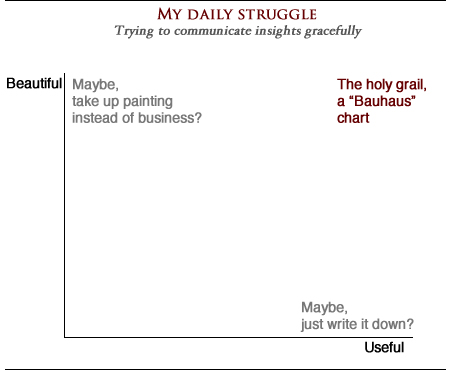
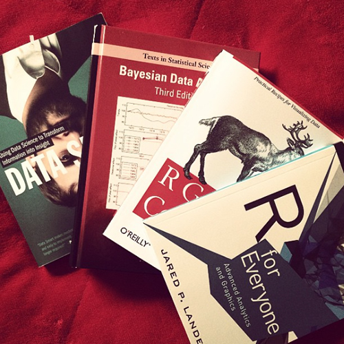
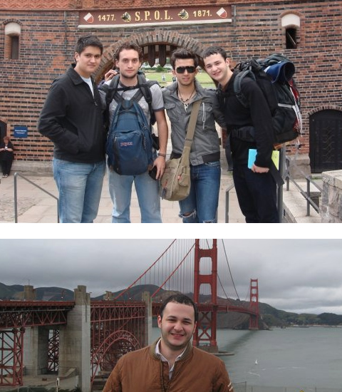
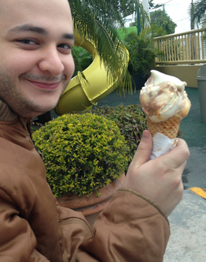

Hi there!
When I was in High School, I was watching Woody Allen’s Manhattan and was immediately drawn to his character’s list of things worth living for. So, being the natural list-maker that I am, I decided to start my own. Since then, I’ve been renovating and expanding the list. So I thought, what better way to introduce myself to Sloan than this?
Following the tradition of the movie, my list is specific and quirky, so in the interest of the reader’s time, I’ve
things worth living for woody allen
Here are some of my personal things worth living for, mixed in with a few pictures and graphs!
the yarn
Experiences
Discovering a song
The feeling you get when you discovered that song you never heard before? Priceless.
My musical tastes are definitely eclectic because I’ve chased this feeling since I can remember. Growing up I listened to pop and transitioned into rock. Then fell in love with electronic music. In college I enjoyed the spirituality of reggae and originality of classical music. While studying in D.C, my roommate introduced me to country and I really began to appreciate jazz (especially live jazz!). I truly believe there can never be enough new songs to discover.
The Smith’s “That joke isn’t funny anymore”, Tchaikovsky’s “1812 Overture”, and Antonio Carlos Jobim ft. Elis Regina’s “Águas de Março”.
Each of these songs actually merit their own distinction in my list (there’s also a few more worthy of the title), but for length’s sake i’ve condensed them here.
Maps
write, write, write… asdalkdj alkd aslkd aslkdj aslkd aslkd jaslkd aslkdj aslkdj aslkdj alkd jaslkd saljd laskj dlaskdj alskd jasld jalkd asld alsdj aslkd laskd jalskd jalsd jlasdj lsak djalskd jsalkdj aslkd aslk daslk djasldlksaj dlaskd jlaskd jaslkd jasl djsalkd jasld jaslkdj aslkd jaslkdj aslk djalskdj asldkjaslkdj aslkd jaslkd jaslkdj alskd jsalkd jaslkd jasldkj
Motivations
Architecture in general, but Mies van der Rohe and the Bauhaus school in particular
Since my days playing with Legos, i’ve always been fascinated by architecture and its relationship with efficiency and human feeling. While traveling in Europe I even managed to convince my friends to take a long detour to see the Bauhaus school, which has always inspired me to merge the useful and the aesthetically pleasing. If you come to look at it, close to what I do everyday with data is trying to merge these two worlds.

Healthy competition
write, write, write… asdalkdj alkd aslkd aslkdj aslkd aslkd jaslkd aslkdj aslkdj aslkdj alkd jaslkd saljd laskj dlaskdj alskd jasld jalkd asld alsdj aslkd laskd jalskd jalsd jlasdj lsak djalskd jsalkdj aslkd aslk daslk djasldlksaj dlaskd jlaskd jaslkd jasl djsalkd jasld jaslkdj aslkd jaslkdj aslk djalskdj asldkjaslkdj aslkd jaslkd jaslkdj alskd jsalkd jaslkd jasldkj

Learning a new trade
write, write, write… asdalkdj alkd aslkd aslkdj aslkd aslkd jaslkd aslkdj aslkdj aslkdj alkd jaslkd saljd laskj dlaskdj alskd jasld jalkd asld alsdj aslkd laskd jalskd jalsd jlasdj lsak djalskd jsalkdj aslkd aslk daslk djasldlksaj dlaskd jlaskd jaslkd jasl djsalkd jasld jaslkdj aslkd jaslkdj aslk djalskdj asldkjaslkdj aslkd jaslkd jaslkdj alskd jsalkd jaslkd jasldkj

Cheap travel
I’ve found few things are as gratifying as finding that perfect place to visit, taking in the food and people and coming under your budget! Below are a couple of those times, first in quiet and peaceful Lübeck, Germany with my friends and then in bustling San Francisco with my mom.

The colors in JMW Turner and Mark Rothko’s paintings
write, write, write… asdalkdj alkd aslkd aslkdj aslkd aslkd jaslkd aslkdj aslkdj aslkdj alkd jaslkd saljd laskj dlaskdj alskd jasld jalkd asld alsdj aslkd laskd jalskd jalsd jlasdj lsak djalskd jsalkdj aslkd aslk daslk djasldlksaj dlaskd jlaskd jaslkd jasl djsalkd jasld jaslkdj aslkd jaslkdj aslk djalskdj asldkjaslkdj aslkd jaslkd jaslkdj alskd jsalkd jaslkd jasldkj
Having an ice-cream cone on a Sunday afternoon

write, write, write… asdalkdj alkd aslkd aslkdj aslkd aslkd jaslkd aslkdj aslkdj aslkdj alkd jaslkd saljd laskj dlaskdj alskd jasld jalkd asld alsdj aslkd laskd jalskd jalsd jlasdj lsak djalskd jsalkdj aslkd aslk daslk djasldlksaj dlaskd jlaskd jaslkd jasl djsalkd jasld jaslkdj aslkd jaslkdj aslk djalskdj asldkjaslkdj aslkd jaslkd jaslkdj alskd jsalkd jaslkd jasldkj